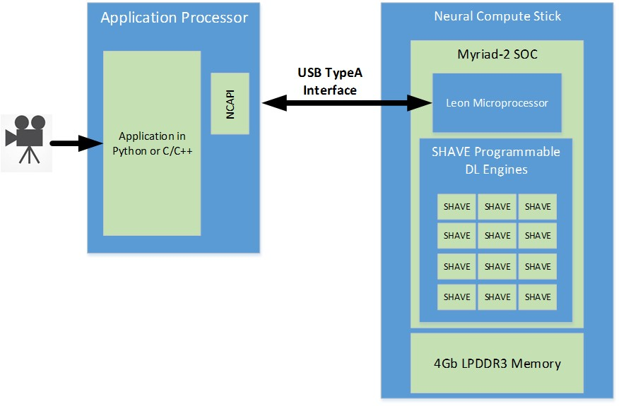

Intel® Movidius™ Neural Compute Stick
The Intel® Movidius™ Neural Compute Stick (Intel® Movidius™ NCS) enables rapid prototyping of deep neural networks (DNNs) with the Intel® Movidius™ Neural Compute SDK (NCSDK).
To use the NCS, you will need to have the Intel® Movidius™ Neural Compute SDK (Intel® Movidius™ NCSDK) and/or Neural Compute API (NCAPI) installed on your development computer.
Connecting the NCS to a Host Machine
The NCS connects to the host machine over a USB 2.0 High Speed interface. You may plug the NCS directly into a USB port on your host machine or into a USB hub that is plugged into your host machine.

Architecture
The NCS is powered by the Intel® Movidius™ Myriad™ 2 vision processing unit (VPU).
The VPU includes 4Gbits of LPDDR3 DRAM, imaging and vision accelerators, and an array of 12 VLIW vector processors called SHAVE processors. These processors are used to accelerate neural networks by running parts of the neural networks in parallel.
The NCS is connected to a host machine using the USB interface on the VPU. The USB3 interface can be used both in Super Speed (5 Gbps) or High Speed (480 Mbps) modes.
The VPU also has a SPARC microprocessor core that runs custom firmware. When the NCS is first plugged in, there is no firmware loaded onto it. The VPU boots from the internal ROM and connects to the host machine as a USB 2.0 device. Applications executing on the host machine communicate to the VPU SOC using the Neural Compute API (NCAPI). When the NCAPI initializes and opens a device, the firmware from the Neural Compute SDK (NCSDK) is loaded onto the NCS. At this time, the NCS resets and reconnects to the host machine as either a USB 2.0 or USB 3.0 device (depending on the host type). It is now ready to accept the neural network graph files and instructions to execute inferences.
A graph file is loaded into the DRAM attached to the VPU via the NCAPI. A LEON processor coordinates receiving the graph file and images for inference via the USB connection. It also parses the graph file and schedules kernels to the SHAVE neural compute accelerator engines. In addition, the LEON processor also takes care of monitoring die temperature and throttling processing on high temperature alerts. The output of the neural network and associated statistics are sent back to the host machine via the USB connection and are received by the host application via the NCAPI.
